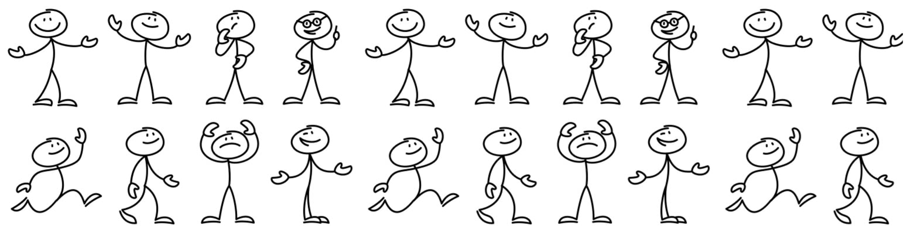
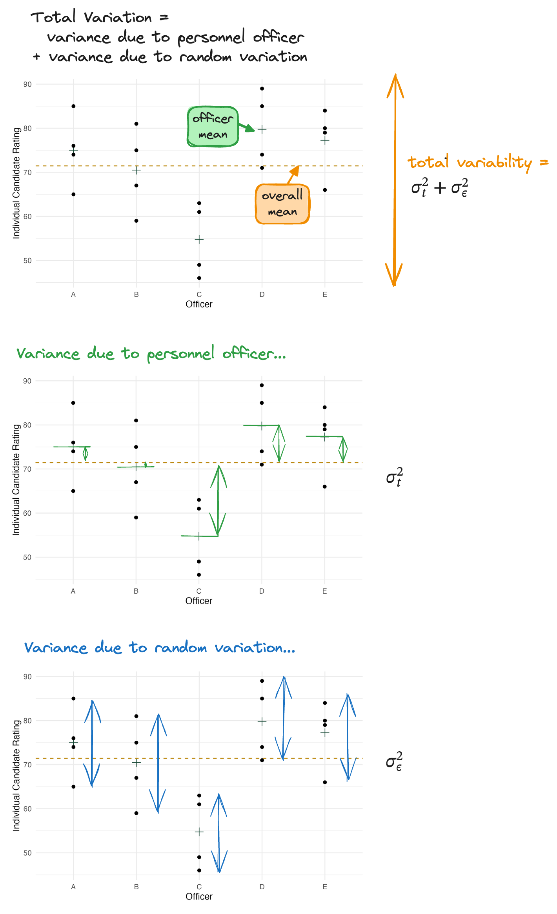
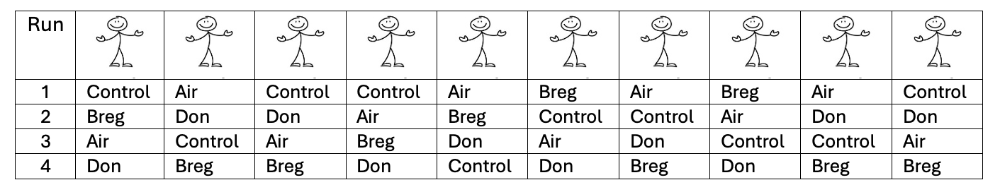

Introduction to Random Effects, CRD with Random Treatment Effects, and Linear Mixed Models
Up to this point, we have been concerned exclusively with fixed effects models.
What were we always testing?
Fixed effects are appropriate when:
Random effects are appropriate when:
| Fixed | Random |
|---|---|
| Specific levels | Sample of levels |
| Same levels if repeated | New levels if repeated |
| Focus: means | Focus: variances |
| Compare (\(\mu_i\)) | Estimate (\(\sigma^2_{\text{factor}}\)) |
Consider an experiment conducted by a company that owns several hundred retail stores. Approximately 50 of the stores are selected at random, and employees in each store was asked to evaluate management. The company is NOT interested in just the 50 stores chosen – it wants to generalize the results to ALL of its stores. Further, suppose that employees were asked from each department (e.g., clothing, kitchen, etc.) in all 50 stores. Therefore, the company is interested in the employee evaluations of management by department and store.
Does NOT change the design much
But…Changes the analysis.
A company employs many personnel officers.
- Five officers were selected at random.
- Each officer rated 4 candidates.
Ratings are from 0–100.
The company wants to know:

Treatment structure: One-way: Officer (5 levels – officer A, B, C, D, E)
Experimental structure: Officers were randomly assigned to interview r = 4 candidates (e.u.) in a CRD. The rating is recorded for each candidate (m.u.).

[1] "1" "2" "3" "4"[1] "A" "B" "C" "D" "E"Make experimental factors R factors!
Here we wanted to make sure that any categorical variables or factors in our experimental design are treated as the special factor type in R!
# A tibble: 20 × 3
officer candidate rating
<fct> <fct> <dbl>
1 A 1 76
2 A 2 65
3 A 3 85
4 A 4 74
5 B 1 59
6 B 2 75
7 B 3 81
8 B 4 67
9 C 1 49
10 C 2 63
11 C 3 61
12 C 4 46
13 D 1 74
14 D 2 71
15 D 3 85
16 D 4 89
17 E 1 66
18 E 2 84
19 E 3 80
20 E 4 79\[y_{ij}=\mu+t_i+\epsilon_{ij} \text{ for } i=1,2,3,4,5; j=1,2,3,4\]
with:
where:
Goal: estimate variance components
Why REML?
Linear mixed model fit by REML ['lmerMod']
Formula: rating ~ (1 | officer)
Data: personnel_data
REML criterion at convergence: 145.2
Scaled residuals:
Min 1Q Median 3Q Max
-1.3841 -0.8901 0.2620 0.6496 1.2605
Random effects:
Groups Name Variance Std.Dev.
officer (Intercept) 80.41 8.967
Residual 73.28 8.561
Number of obs: 20, groups: officer, 5
Fixed effects:
Estimate Std. Error t value
(Intercept) 71.450 4.444 16.08Estimating Variances
Estimating the Overall Mean
lmer function is part of the lme4 package – include library(lme4) at the beginning of your script.lmer object (in this example, personnel_mod) to reference later!summary(personnel_mod) gives us the information we generally want about the model fit.Let’s break down this code!
lm() we provide lmer() with (1) the data, and (2) a formula.lmer() versus lm():
REML = TRUEresponse ~ (1 | random_factor)Researchers study 4 knee braces: Control, Air Armor 2, Breg, Don Joy
10 high school running backs with previous ACL injury participate. Each player: Wears all 4 braces, Order randomized
Time to complete 40-yard agility course recorded

Do we care only about these 10 running backs?
| Source of Variation | DF |
|---|---|
Linear Mixed Models (LMM)
Mixed models come about when one factor is fixed and one factor is random. A mixed model should be used to study the effects of one factor on the population mean and the effects of another factor on the population variance.
\[y_{im} = \mu + \tau_i + p_m + \epsilon_{im} \text{ with } p_m \sim \text{iid } N(0,\sigma_{blk}^2) \text{ and } \epsilon_{im} \sim \text{iid } N(0,\sigma_\epsilon^2)\]
for \(i=1,2,3; m=1,2,…,10\)
where:
Note
# A tibble: 12 × 3
running_back knee_brace agility_time
<fct> <fct> <dbl>
1 1 Control 19.1
2 1 AirArmor 18
3 1 Breg 18.0
4 1 DonJoy 17.9
5 2 Control 19
6 2 AirArmor 18.4
7 2 Breg 18.2
8 2 DonJoy 17.7
9 3 Control 19.9
10 3 AirArmor 18.7
11 3 Breg 18.6
12 3 DonJoy 18.7Linear mixed model fit by REML ['lmerMod']
Formula: agility_time ~ knee_brace + (1 | running_back)
Data: kneebrace_data
REML criterion at convergence: 4
Scaled residuals:
Min 1Q Median 3Q Max
-1.72607 -0.47036 -0.03709 0.53329 1.71255
Random effects:
Groups Name Variance Std.Dev.
running_back (Intercept) 0.15453 0.3931
Residual 0.01965 0.1402
Number of obs: 40, groups: running_back, 10
Fixed effects:
Estimate Std. Error t value
(Intercept) 18.44125 0.12627 146.044
knee_brace1 -0.19925 0.03839 -5.190
knee_brace2 -0.20925 0.03839 -5.451
knee_brace3 0.77575 0.03839 20.208
Correlation of Fixed Effects:
(Intr) kn_br1 kn_br2
knee_brace1 0.000
knee_brace2 0.000 -0.333
knee_brace3 0.000 -0.333 -0.333\[H_0: \tau_1=\tau_2=\tau_3=\tau_4 \text{ vs } H_A: \text{ at least one } \tau_i \text{ differs}\]
Recall \(y_{im} = \mu + \tau_i + p_m + \epsilon_{im}\)
In the mixed model:
Thus, the estimated mean and variance are given by:
knee_brace emmean SE df lower.CL upper.CL .group
Control 19.2 0.132 10.7 18.8 19.6 A
AirArmor 18.2 0.132 10.7 17.8 18.6 B
Breg 18.2 0.132 10.7 17.8 18.6 B
DonJoy 18.1 0.132 10.7 17.7 18.5 B
Degrees-of-freedom method: kenward-roger
Confidence level used: 0.95
Conf-level adjustment: sidak method for 4 estimates
P value adjustment: tukey method for comparing a family of 4 estimates
significance level used: alpha = 0.05
NOTE: If two or more means share the same grouping symbol,
then we cannot show them to be different.
But we also did not show them to be the same. Treating blocks as random (instead of fixed) (1) Increases SE of treatment means (2) Does NOT change SE of treatment differences
Running back Fixed (LM)
knee_brace emmean SE df lower.CL upper.CL
AirArmor 18.24 0.0443 27 18.15 18.33
Breg 18.23 0.0443 27 18.14 18.32
Control 19.22 0.0443 27 19.13 19.31
DonJoy 18.07 0.0443 27 17.98 18.16
Results are averaged over the levels of: running_back
Confidence level used: 0.95 contrast estimate SE df t.ratio p.value
AirArmor - Breg 0.010 0.0627 27 0.160 0.9985
AirArmor - Control -0.975 0.0627 27 -15.553 <0.0001
AirArmor - DonJoy 0.168 0.0627 27 2.680 0.0565
Breg - Control -0.985 0.0627 27 -15.713 <0.0001
Breg - DonJoy 0.158 0.0627 27 2.520 0.0792
Control - DonJoy 1.143 0.0627 27 18.233 <0.0001
Results are averaged over the levels of: running_back
P value adjustment: tukey method for comparing a family of 4 estimates Running back Random (LMM)
knee_brace emmean SE df lower.CL upper.CL
AirArmor 18.2 0.132 10.7 18.0 18.5
Breg 18.2 0.132 10.7 17.9 18.5
Control 19.2 0.132 10.7 18.9 19.5
DonJoy 18.1 0.132 10.7 17.8 18.4
Degrees-of-freedom method: kenward-roger
Confidence level used: 0.95 contrast estimate SE df t.ratio p.value
AirArmor - Breg 0.010 0.0627 27 0.160 0.9985
AirArmor - Control -0.975 0.0627 27 -15.553 <0.0001
AirArmor - DonJoy 0.168 0.0627 27 2.680 0.0565
Breg - Control -0.985 0.0627 27 -15.713 <0.0001
Breg - DonJoy 0.158 0.0627 27 2.520 0.0792
Control - DonJoy 1.143 0.0627 27 18.233 <0.0001
Degrees-of-freedom method: kenward-roger
P value adjustment: tukey method for comparing a family of 4 estimates